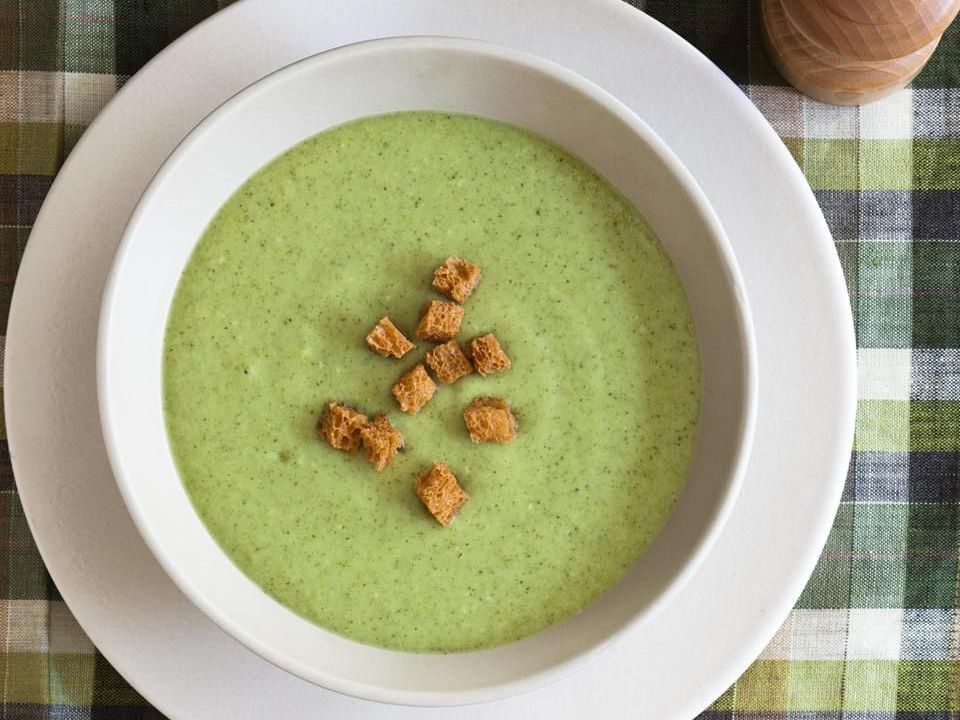

Broccoli Soup

Description
This broccoli soup recipe is thick and flavorful. It is simple, delicious, and quick to make.
For maximum taste it's recommended to use fresh and organic ingredients. Enjoy (I know you will).
Ingredients
- 5 tablespoons butter,divided
- 1 onion, chopped
- 1 stalk celery, chopped
- 8 cups broccoli florets
- 3 tablespoons all-purpose flour
- 2 cups milk
- ground black pepper to taste